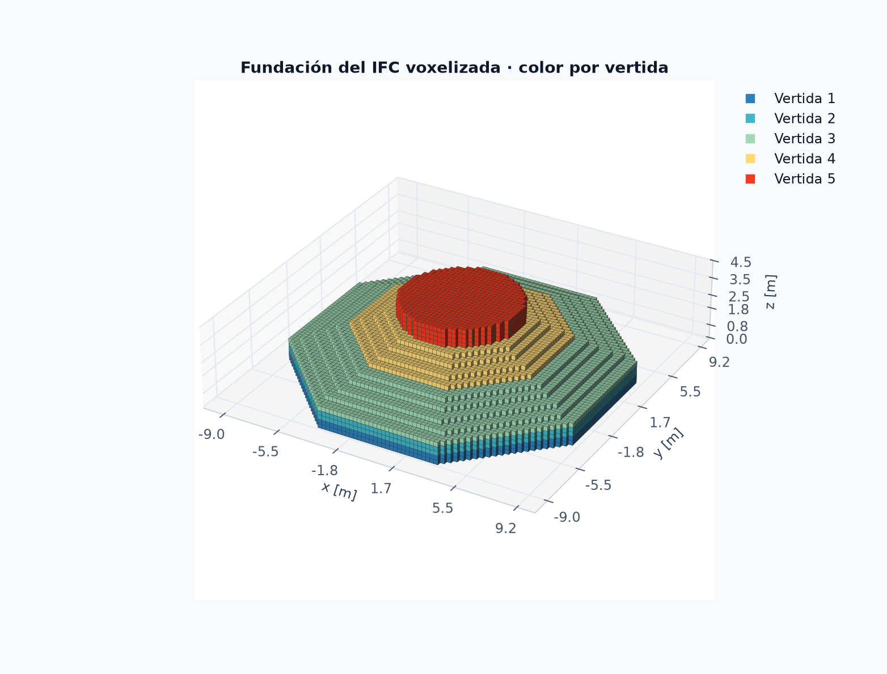
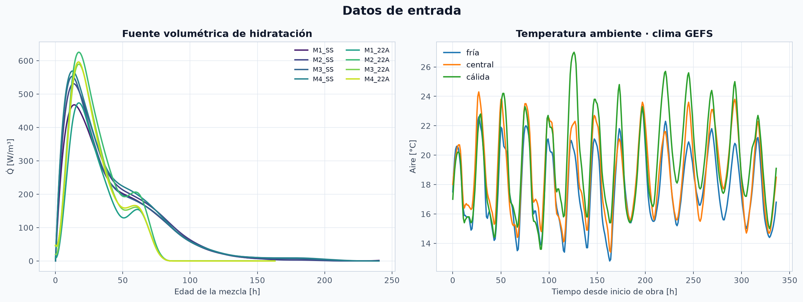
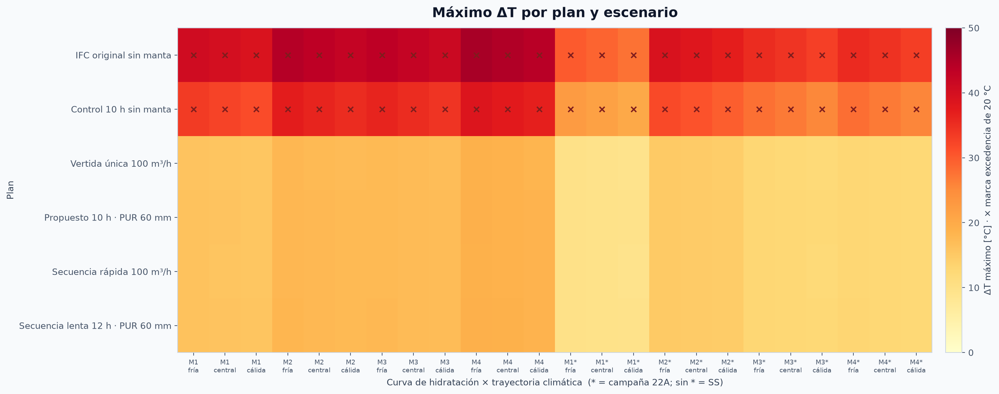
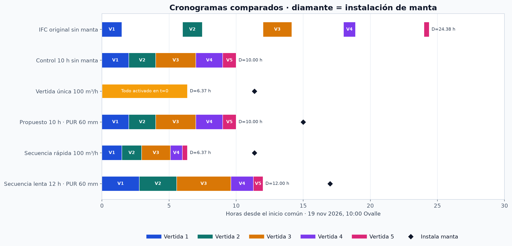
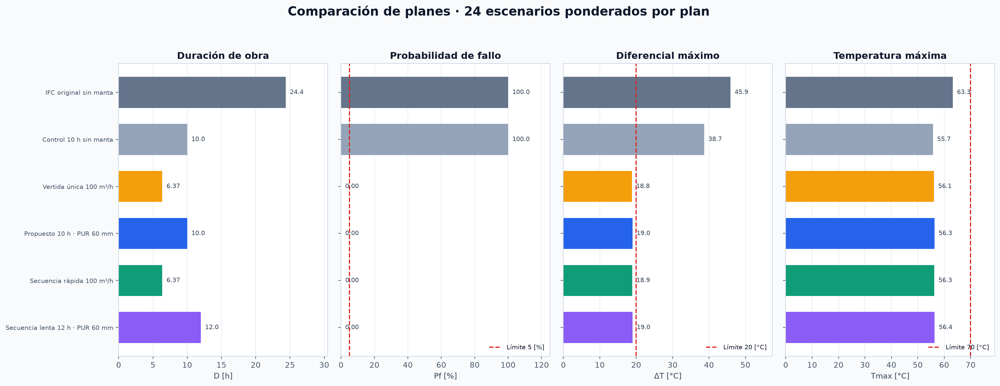

Volumen IFC
636,8 m³
5 vertidas identificables
Una representación BIM conectada a un solver térmico por voxeles para evaluar la secuencia de hormigonado, la hidratación y las protecciones de la fundación.

El plan de 10 h con hormigón a 10 °C y manta PUR de 60 mm mantiene ΔT ≤ 20 °C y Tmax ≤ 70 °C en sus 24 combinaciones de hidratación y clima. Pf calculada: 0 %.
El IFC define la fundación y las vertidas. El voxelizador asigna cada celda a su vertida para resolver activación, conducción y fuente de calor.

| Vertida | Dimensión envolvente | Volumen |
|---|---|---|
| 1V1 | 18 × 18 × 0,55 m | 147,626 m³ |
| 2V2 | 18 × 18 × 0,55 m | 147,626 m³ |
| 3V3 | 18 × 18 × 1,10 m | 214,224 m³ |
| 4V4 | 12,5 × 12,5 × 1,10 m | 88,925 m³ |
| 5V5 | 7 × 7 × 1,00 m | 38,375 m³ |
Mantos de Hornillos / Ecos del Mar, Región de Coquimbo, Chile.
El volumen y las dimensiones corresponden al IFC utilizado en la corrida. Los redondeos mostrados son de presentación; los CSV y el IFC conservan los valores de cálculo.
Conducción transitoria en 3D sobre una malla cartesiana. Cada vertida comienza a su hora programada, recibe su temperatura de colocación y genera calor según su curva de hidratación.
En el plan de 10 h: t = 15 h desde el inicio de obra. El retiro queda fuera del horizonte de 14 días.
Se probaron ocho fuentes de hidratación y tres trayectorias GEFS. Los pesos se combinan de forma independiente para calcular Pf.

Los tres escenarios se derivan del snapshot GEFS del 16 nov 2026; no son 31 miembros individuales.
El punto más caliente y la ubicación S25 más fría se vuelven a buscar en cada instante. La comparación abarca la estructura completa y no exige que ambos puntos sean vecinos.
Conserva los inicios y temperaturas de colocación del IFC. Se mantiene el moldaje configurado en V1, V2 y V5, sin manta térmica.
Tmax permanece bajo 70 °C. El incumplimiento viene de la diferencia térmica entre el máximo global y la mínima S25. El peor ΔT aparece con M4_SS / clima frío, a las 164 h.
| Vertida | Inicio IFC | Duración estimada | Fin estimado |
|---|---|---|---|
| V1 | 0 h | 1,476 h | 1,476 h |
| V2 | 6 h | 1,476 h | 7,476 h |
| V3 | 12 h | 2,142 h | 14,142 h |
| V4 | 18 h | 0,889 h | 18,889 h |
| V5 | 24 h | 0,384 h | 24,384 h |
La duración D = 24,384 h se estima dividiendo cada volumen por la capacidad de 100 m³/h. Temperatura de colocación IFC: 18 °C en las cinco vertidas.
Las curvas M1_SS / clima central muestran la evolución representativa. La decisión final se basa en la matriz completa, no solo en estas curvas.

Cada grupo de tres columnas corresponde a un clima; la × marca una excedencia de 20 °C.

Sin manta, la secuencia IFC no satisface ΔT ≤ 20 °C en ningún escenario. El siguiente tab muestra el cambio bajo un programa y una temperatura de colocación definidos.
Se conserva el programa de 10 h acordado, se coloca el hormigón a 10 °C y se instala la manta cinco horas después de completar la secuencia.
Caudales medios por vertida: V1 73,8; V2 73,8; V3 71,4; V4 44,5 y V5 38,4 m³/h. Todos quedan bajo la capacidad máxima de 100 m³/h por cuadrilla.
Cortes horizontales de la corrida del plan 1. Se conserva la misma escala de color para comparar días distintos.

El rombo marca la instalación de la manta. Para planes con manta, se programa cinco horas tras el fin de la colocación.

La evaluación del plan usa 24 combinaciones ponderadas; los datos completos y la configuración se pueden abrir o descargar.
El peor ΔT queda 1,036 °C bajo el umbral y ocurre a las 336 h, el último instante simulado. El dossier demuestra cumplimiento hasta 14 días; no proyecta el comportamiento posterior.
Se fijó 100 m³/h como capacidad máxima por cuadrilla. Se comparan duración y cumplimiento térmico, manteniendo materiales, clima y límites de evaluación.
18 °C · sin manta · inicios cada 6 h.
10 °C · mismo cronograma que Plan 1.
Todas las regiones activas en t=0 · manta 60 mm.
10 °C · secuencia por vertidas · manta en t=15 h.
Una cuadrilla · sin esperas · manta 60 mm.
Una cuadrilla · caudal medio 53,1 m³/h · manta 60 mm.
En los seis planes, se evaluaron Tmax y ΔT por escenario. Los peores valores de métricas diferentes pueden pertenecer a climas distintos.

Ocho curvas de fuente térmica por tres trayectorias climáticas. Los pesos climáticos y de hidratación se combinan de forma independiente.
La secuencia continua a 100 m³/h es la alternativa más rápida factible evaluada: alcanza el mínimo aritmético volumen/capacidad (636,775/100 = 6,368 h) y cumple en los 24 escenarios. El plan de 10 h con PUR 60 mm también cumple y sigue siendo una opción con más holgura operacional.
* Límite inferior teórico: la alternativa de vertida única activa todo el dominio en t=0 para la simulación, aunque se le asocia una duración de colocación D=6,368 h. No es una secuencia realista ni se usa para afirmar que exista un plan operativo más rápido.
El sitio, la geometría IFC, los datos climáticos y las curvas de hidratación están registrados en el dossier y en los archivos de salida.
Duración, probabilidades y cumplimiento agregado.
CSVMétricas de cada plan, curva de hidratación y clima.
JSONParámetros, cronogramas, pesos y condiciones.